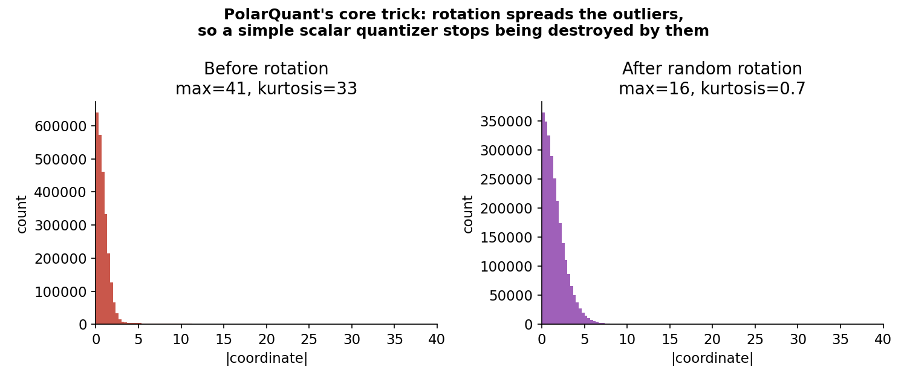
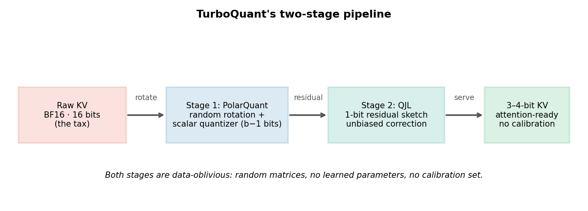
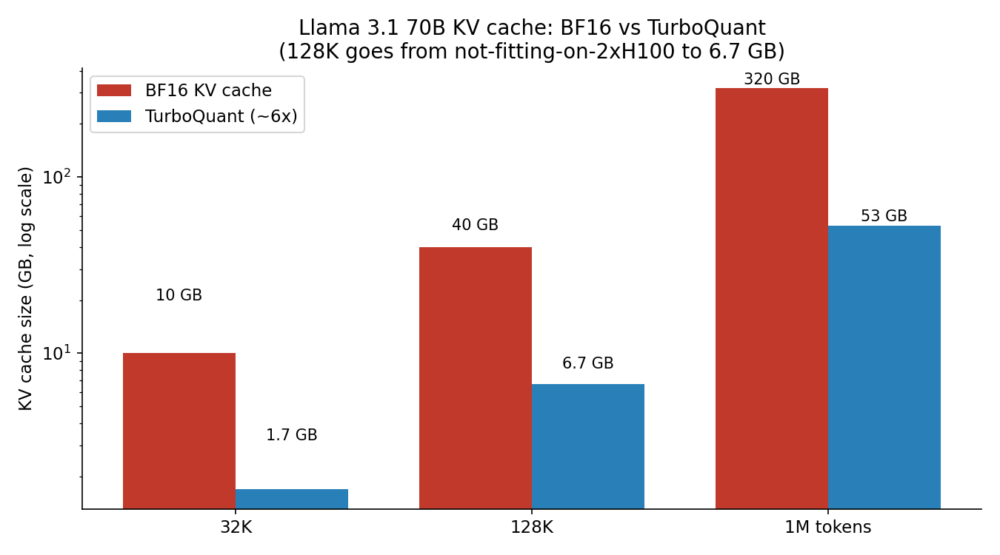
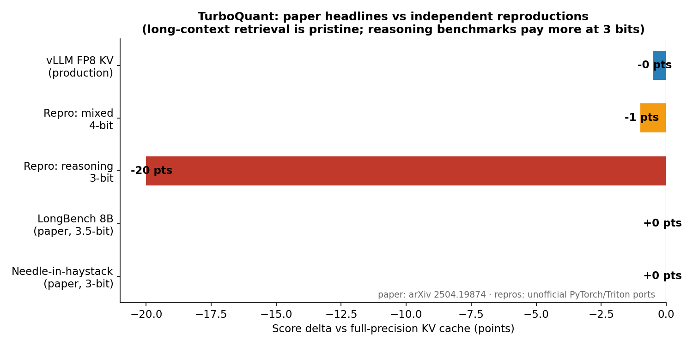

Your LLM doesn't reread the conversation every time it generates a word. It keeps notes — a key and a value vector for every token it has ever seen in this session — so each new token only needs one pass of attention over those notes. Those notes are the KV cache, and they are the single most expensive line item in LLM serving that nobody talks about.
A 70-billion-parameter model at 128K context burns 40 GB of GPU memory on the KV cache alone — nearly double the headroom left on two H100s after the weights load. The model weights are a fixed tax you pay once. The cache is a per-request, per-user tax that grows with your traffic. A new method from Google Research, TurboQuant (arXiv:2504.19874, accepted to ICLR 2026), cuts that cache 6x — down to 3 bits per value — and speeds up attention 8x on H100s, with zero calibration data and, on retrieval benchmarks, zero accuracy loss. The trick that makes it work is almost insultingly simple: rotate the vectors first.
The ELI5 version
Imagine the model's notes as a stack of receipts. Each receipt has 128 numbers on it. Most numbers are small — but every receipt has two or three numbers that are enormous, the outliers. That's the real distribution of key vectors: spiky channels that dwarf everything else.
Now you want to photocopy the whole stack in shorthand, using only 8 possible numbers per entry (3 bits). The photocopier has one template: it must choose a scale covering the biggest number on any receipt, because that's the shared range. So all the small numbers get crammed into two or three of the eight slots, and the fine detail dies. Quantizing the KV cache to 3 bits naively destroys quality for exactly this reason.
TurboQuant's fix: rotate the receipts before photocopying. A random rotation doesn't change what's written on them — vector norms are preserved exactly — but it smears every outlier's energy across all 128 numbers. After rotation, no single number is huge; the whole distribution looks like a boring bell curve. The photocopier's 8 slots now cover a tight range, and the fine detail survives. Then, to clean up the leftover smudges, a second stage sketches the error with a 1-bit randomized transform that is mathematically unbiased — the Johnson–Lindenstrauss idea. Rotate, photocopy, de-smudge. That's the whole engine.

How it works: two stages, zero calibration
Stage 1 — PolarQuant. Apply a random rotation matrix to each key and value vector, then quantize with the optimal scalar quantizer for each coordinate, computed analytically. No learned parameters, no calibration dataset. This is the crucial distinction from KIVI (per-channel keys, per-token values, 2-bit) and AWQ/GPTQ: everything in TurboQuant is random, so you can apply it to any model, at any time, in one shot.
Stage 2 — QJL error correction. The residual from Stage 1 gets compressed through a 1-bit Quantized Johnson–Lindenstrauss transform. The QJL step exists for one reason: attention is all inner products, and naive quantization biases inner products — it systematically shrinks attention scores. The 1-bit sketch is provably an unbiased estimator of the inner product, so the corrected attention scores are right in expectation. TurboQuant's own theory lands within a factor of ~2.7 of the information-theoretic lower bound on distortion — near the Shannon limit for this problem.

The companion notebook reproduces the two mechanisms at toy scale: the rotation shrinks a shared-range 3-bit quantizer's error several-fold (MSE 5.2 → 1.2 on outlier-prone vectors), and the QJL-style residual sketch drives inner-product bias from −0.033 to +0.000 over 2,000 Monte-Carlo trials.
The numbers: what 6x buys you
The serving math is the real product. Llama 3.1 70B, KV cache only:

- 32K: 10 GB → 1.7 GB. On 2×H100 (20 GB of headroom after weights), concurrent users rise from ~2 to ~11 — 5.5x more users per GPU-hour, cutting cost per user-hour ~5.5x.
- 128K: 40 GB → 6.7 GB. The workload that could not physically fit alongside the weights now fits with room to spare.
- 1M: ~320 GB → ~53 GB.
On benchmarks, the paper's headline results: 100% retrieval on Needle-in-a-Haystack up to 104K tokens (0.997, matching full precision exactly), LongBench on Llama-3.1-8B-Instruct at 50.06 with 3.5-bit TurboQuant — identical to the full cache — and <0.5% perplexity change at 3 bits. It beats KIVI, SnapKV, and PyramidKV in the paper's head-to-heads, and generalizes to vector search, beating product quantization on recall with near-zero indexing time.
The state of the art — and the honest caveat
Here is the part the headline tweets skip. Independent reproductions — two unofficial PyTorch/Triton ports, the only code that exists since Google hasn't shipped an official implementation as of October 2026 — land short of the paper on some workloads:

One port measured 0.9996 cosine similarity and 94% top-1 attention match at 8K context with 5.1x compression — excellent — yet still needed correction after an earlier "perfect generation at 5x" result traced back to a test bug. On reasoning benchmarks, 3-bit modes showed 15–25 point drops at long context; a 4-bit variant held up much closer to the paper (~2.6–3.1x real-world KV reduction, ~1 point off the FP8 baseline).
The practical read: the KV-cache compression ladder in October 2026 is FP8 KV (~2x, production-ready today in vLLM via --kv-cache-dtype fp8) at the bottom, and TurboQuant-style 3-bit methods at the top for when you specifically need more than 2x and can validate against your own eval set. Weight quantization (AWQ/GPTQ, 4x) and KV quantization (TurboQuant, 6x) stack: an AWQ 4-bit 70B (~35 GB weights) plus a TurboQuant 128K cache (6.7 GB) fits ~42 GB on a single 80 GB H100 — a workload that previously needed multiple GPUs.
The direction is clear either way. Context windows keep growing, and the KV cache — not the weights, not the FLOPs — is what empties the GPU. A rotation and a random sign sketch just bought the industry its biggest free lunch in serving since PagedAttention. Validate it on your benchmarks before you trust the 3-bit headline. But don't ignore it: the era of the uncompressed KV cache is ending.